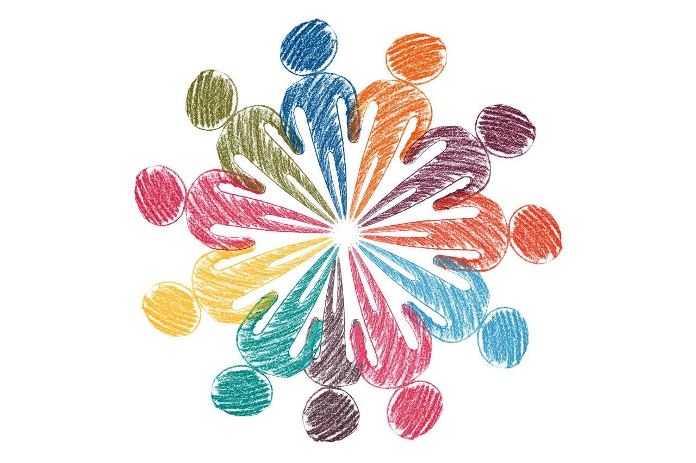

 Imagen 5 (Web Pixabay)
Como docentes, pensamos que la educación en valores es un tema fundamental para trabajara con los más pequeños. Por ello, vamos a hacer referencia a los valores que están más relacionados con nuestra unidad didáctica con el fin de fomentarlos y potenciarlos y, serían:
- Educación para la salud: es un instrumento imprescindible para el desarrollo de estilos de vida saludables incorporando conductas favorables a su salud. Es decir, es un proceso de formación, de responsabilidad del individuo a fin de que adquiera los conocimientos, las actitudes y los hábitos básicos para la defensa y la promoción de la salud individual y colectiva.
- Educación para la igualdad de oportunidades entre sexos: se educa en común y en igualdad, al margen del sexo de las personas. Significa detectar todos los estereotipos asociados a lo masculino y lo femenino, ser conscientes de ellos, reflexionar y poner en marcha las medidas necesarias para eliminarlos de nuestro lenguaje y de nuestro comportamiento.
- Educación para la paz: es un proceso que debe estar presente en el desarrollo de la personalidad. Éste debe ser continuo y permanente, para enseñar a "aprender a vivir en la no violencia", y que confía en la creación de ámbitos de justicia, de respeto, de tolerancia y felicidad. El proceso de enseñanza-aprendizaje implica una ética personal y social fundamentada en la convivencia en libertad y en igualdad.